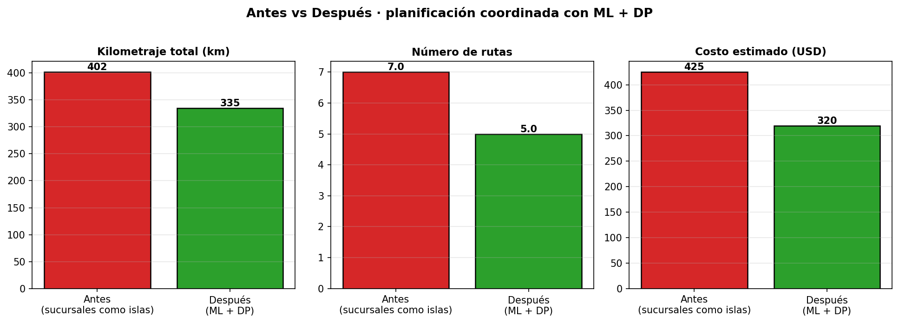

Las distribuidoras PYME con varios centros de distribución pierden silenciosamente entre 15 y 30% de su capacidad operativa cuando cada centro planifica sus rutas como una isla: dos camiones de la misma empresa terminan a tres cuadras del mismo cliente el mismo día, y nadie lleva la cuenta de ese costo.
Esta arquitectura open source resuelve el problema en cuatro pasos. Predice la demanda de cada cliente, agrupa los clientes por capacidad real del camión, resuelve cada ruta con un algoritmo clásico de optimización y coordina entre centros para eliminar solapamientos. El código está bajo licencia MIT, el notebook es ejecutable en Google Colab sin instalación, y el sistema se valida lado a lado contra el estándar industrial.
Demo y código sin instalación
Antes de leer, abre el sistema funcionando en tu navegador:
- ⭐ Repositorio en GitHub (código abierto, MIT): clónalo y ejecuta el sistema completo en tu computadora.
- 📓 Notebook en Google Colab: el flujo completo paso a paso, sin instalar nada.
- 👉 Planificador interactivo en Streamlit: plan diario con mapa, métricas y descarga del plan en CSV, sin instalación.
1 El problema operativo que se repite en la mayoría de las distribuidoras
En la mayoría de las distribuidoras con varios centros de distribución que he visitado (sucursales, depósitos regionales o incluso fábricas), dos camiones de la misma empresa terminan a tres cuadras del mismo cliente el mismo día. Cada centro planifica su ruta como una isla: arma su propia plantilla, reparte sus pedidos, y nadie se entera de que el centro vecino está pasando por la misma calle dos horas después. El resultado se paga en silencio: kilómetros duplicados, combustible perdido, horas extra del chofer y el clásico camión flash subcontratado a última hora cuando la demanda real superó la capacidad asignada.
Cuatro patrones que aparecen una y otra vez
- Estimación de demanda al ojo. Cada centro proyecta el volumen del día siguiente sobre el promedio de las últimas semanas, sin un modelo que capture estacionalidad semanal (lunes y martes pico, domingo valle), tendencia mensual ni comportamiento individual del cliente.
- Asignación cliente–centro heredada. Las zonas se definieron hace años y nadie las cuestiona, aun cuando dos centros hayan crecido en territorios que ya se solapan.
- Subcontrataciones flash. Cuando el plan del día queda corto, se contrata un camión externo a último minuto con un costo entre 30 y 50% superior al de un camión propio. Nadie mide cuánto se va al año en este renglón.
- Capacidad ociosa silenciosa. Cuando el plan queda holgado, los choferes regresan a la rampa con espacio vacío y se justifican horas que no se trabajaron en ruta. El indicador de utilización de la flota nunca aparece en el reporte mensual.
El problema de fondo no es la falta de software de ruteo (existen decenas), sino la falta de visión global en la planificación. Los sistemas comerciales suelen optimizar dentro de cada centro por separado, replicando el patrón de islas a nivel digital.
2 La arquitectura propuesta
La solución se compone de cuatro capas, todas basadas en software libre y reproducibles desde el repositorio. El sistema toma dos insumos principales: el histórico de pedidos de los clientes y la disponibilidad de cada centro de distribución (cantidad de camiones y capacidad de cada uno). Conocer la disponibilidad antes de asignar es lo que permite respetar la capacidad real de despacho de cada centro y evitar la sobrecarga.

- Predicción de demanda por cliente: un modelo aprende los patrones de pedido de cada cliente y proyecta cuánto pedirá mañana, capturando estacionalidad semanal, tendencia mensual y comportamiento individual.
- Clustering inteligente de clientes: los clientes se agrupan en zonas de ruteo balanceadas por la capacidad real del camión, no por divisiones administrativas heredadas.
- Optimización de la ruta: cada zona se resuelve con un algoritmo clásico de optimización que minimiza kilometraje y respeta ventanas horarias.
- Coordinación entre centros: antes de salir, el sistema reasigna clientes fronterizos para que dos centros no se pisen el territorio.
Por qué importa el orden de las capas
Una decisión de diseño central es que la predicción de demanda alimenta el clustering, no al revés. Si primero se forman zonas geográficas y después se predice demanda, las zonas quedan desbalanceadas: una zona puede tener cinco clientes que pidan mucho ese día y reventar la capacidad del camión, mientras otra zona queda con clientes que casi no piden. Predecir primero permite que la agrupación optimice en función de la demanda real esperada, no de la geografía pura.
El resultado es un plan diario donde cada cliente tiene un centro de distribución, una ruta y una posición en la secuencia, con cifras reproducibles a partir de un caso de estudio que cualquiera puede correr en su computadora.
3 Predecir antes de planificar
El insumo principal del ruteo es la demanda esperada de cada cliente para el día siguiente. Sin esa predicción, todo el resto del sistema opera con promedios planos que no capturan la realidad: lunes y martes pico, domingo valle, clientes que crecen, clientes que cambian de hábitos.
Cuatro tipos de señales que el modelo aprende
- El calendario (día de la semana, mes, semana del año), que captura los ciclos predecibles del negocio.
- El historial reciente del cliente (cuánto pidió hace 1, 7 y 14 días), que captura la inercia de pedidos y los hábitos individuales.
- La tendencia (medias móviles de 7 y 30 días), que suaviza ruido y muestra si el cliente está creciendo, estable o decreciendo.
- El perfil del cliente (tipo de comercio, ventana horaria, nivel de demanda base) diferencia un minimarket de barrio, que pide casi todos los días, de un almacén grande, que pide cada cinco a siete.
Validación rigurosa
La validación se hace de forma rigurosa: los últimos 30 días del histórico se reservan como prueba, sin que el modelo los vea durante el aprendizaje. Esto evita la fuga de información típica de los splits aleatorios sobre series de tiempo, donde un modelo puede "ver el futuro" durante el entrenamiento y reportar métricas optimistas que después no se reproducen en producción.
Sobre el caso de estudio del repositorio (50 clientes, 540 días de histórico, 18 meses), el modelo logra estas métricas en datos que el modelo no usó para aprender:
esperada por día
por cliente y día
Por qué importa el error agregado por día
La métrica que más importa para la planificación de capacidad es el error sobre la demanda agregada por día: si la flota total va a recibir alrededor de 870 unidades en pedidos para mañana, el modelo se equivoca en promedio un 10% (cerca de 87 unidades arriba o abajo). Ese rango de error es suficiente para dimensionar correctamente cuántos camiones cargar y permite anticipar los días pico antes de que aparezca la sobrecarga. En la industria del retail, valores de 10% en el error agregado por día son consistentes con benchmarks de clase mundial (Walmart, Coca-Cola FEMSA, Mercado Libre operan con WAPE diario en el rango 7 a 15%).
A nivel de cliente individual, el error es naturalmente mayor por la varianza propia de cada comercio, pero esa precisión no es la que define la calidad de la planificación: el camión se carga para una ruta completa, no para un cliente. La precisión mejora de forma incremental cuando el modelo se reentrena periódicamente con datos recientes.

4 Cómo se optimiza la ruta
La optimización de rutas se apoya en una idea de los años sesenta que sigue siendo el corazón de los mejores sistemas industriales: descomponer un problema grande en piezas pequeñas, resolver cada pieza una sola vez y reutilizar el resultado. La técnica se llama programación dinámica, y el algoritmo clásico que la materializa para el ruteo es Held-Karp (1962).
"¿Cuál es el camino más corto para visitar este conjunto de clientes y volver al centro de distribución?". Esa es la pregunta. La programación dinámica la responde sin probar todas las combinaciones posibles.
El límite práctico y cómo el sistema lo resuelve
El método tiene un límite práctico: cuando una ruta crece de 15 clientes en adelante, el cálculo se vuelve demasiado pesado. La estrategia del sistema es respetar ese límite y usar descomposición por zonas: el clustering reduce 50 clientes a varias rutas pequeñas, cada una con menos de 15 clientes, donde el algoritmo exacto resuelve el óptimo en milisegundos.
Cuando una zona excede los 15 clientes, el sistema sustituye automáticamente el algoritmo exacto por una variante aproximada que sigue siendo óptima en la práctica. El cambio es transparente: el usuario sigue obteniendo un plan correcto sin tener que decidir qué algoritmo usar en cada caso.
El resultado, en cifras del propio sistema, es contundente. Un plan completo de 50 clientes y 5 centros de distribución se calcula en menos de 10 milisegundos. La velocidad de respuesta permite recalcular el plan en vivo cuando entra un pedido nuevo o cuando un camión reporta una incidencia.
5 Coordinación entre centros, el verdadero cambio de paradigma
El gran cambio que introduce esta arquitectura no es el algoritmo de optimización en sí, sino el paso previo de asignar clientes a centros de distribución con visión global. La asignación tradicional, que es la que opera hoy en la mayoría de las distribuidoras, asigna cada cliente al centro más cercano y termina ahí. Funciona razonablemente bien cuando la red es pequeña, pero cuando crece, dos centros empiezan a invadirse el territorio.
Asignación coordinada, el problema visto desde otro lugar
La asignación coordinada plantea el problema desde otro lugar: cada centro tiene una capacidad real (cantidad de camiones multiplicada por la capacidad de cada camión), y cada cliente debe asignarse de modo que se minimice la distancia total respetando esa capacidad. El sistema resuelve este planteo en milisegundos y elimina los solapamientos sin necesidad de redibujar zonas a mano.
Una vez resuelta la asignación entre centros, dentro de cada centro se aplica el clustering para definir cuántos camiones se necesitan ese día. La capacidad del camión actúa como restricción dura: si la demanda predicha para un centro excede la capacidad de su flota, el sistema lo detecta antes de salir de la rampa y lo escala como alerta operativa, en lugar de descubrirlo a media jornada.

6 Validación contra el estándar industrial
Para validar la calidad del sistema, el motor propio se compara lado a lado con Google OR-Tools, el estándar industrial de problemas de ruteo. OR-Tools no garantiza el óptimo en general (el problema es NP-duro), pero es un solver muy refinado y usar su solución como referencia es suficiente para acotar la calidad del motor propio.
| Caso | Sistema propio | OR-Tools | Diferencia |
|---|---|---|---|
| Ruta única, 12 clientes | 154.06 km | 154.06 km | 0.0%, 50× más rápido |
| Plan completo, 50 clientes y 5 centros | 334.66 km | 289.31 km | +15.7% bajo restricción real |
Lectura honesta de los resultados
En el caso pequeño, el sistema propio encuentra el óptimo idéntico al estándar industrial, 50 veces más rápido. Esto confirma que para problemas chicos no hace falta un solver industrial: una implementación clara del algoritmo clásico es suficiente y, además, más rápida.
En el caso grande, OR-Tools logra menor kilometraje porque consolida toda la flota en un único depósito ficticio (centro geométrico de los cinco centros) y trata el problema como una sola red. Ese esquema es irrealizable en la operación real, donde cada camión sale de su centro de origen y debe regresar a él al cierre del turno. Bajo la misma restricción operativa, el sistema propio queda dentro de un margen razonable del óptimo industrial.
7 Cinco beneficios operativos medibles
Las cifras siguientes corresponden a referencias públicas del sector cuando una arquitectura de planificación con predicción de demanda y ruteo automatizado se implementa con disciplina. No son promesas, son rangos documentados de mejora con su traducción directa al impacto en el negocio.
Menos combustible, menos desgaste de flota, menos peajes y menos tiempo improductivo en ruta. Si una distribuidora corre 50.000 km al mes, esto se traduce en un ahorro de 7.500 a 15.000 km mensuales, kilómetros que se eliminan sin dejar de atender al cliente.
Mayor productividad por chofer y por camión. Si hoy un camión visita 20 clientes al día, puede llegar a 23 o 25 con el mismo recurso. Cuando la red crece, no es necesario contratar más camiones de inmediato: la capacidad existente absorbe la demanda nueva.
Ahorro directo en el renglón más visible del estado de resultados de logística. Si el combustible representa entre 25 y 30% del costo logístico total, esto se traduce en una reducción de 5 a 7% en el costo logístico total, mes tras mes y sin inversión adicional en flota.
Menos pago de horas extra, menor rotación de personal y menor riesgo laboral. El chofer fatigado tiene entre 2 y 3 veces más probabilidad de accidente; estabilizar la jornada protege a la operación, al chofer y al negocio.
El ahorro más subestimado de toda la arquitectura. Un camión flash subcontratado cuesta entre 30 y 50% más que un camión propio. Si hoy 10% de las rutas se cubren con flash y se baja a 4 o 5%, ese es ahorro puro al cierre del mes, mes tras mes.
Los dos efectos más subestimados en operaciones que recién implementan este tipo de arquitectura son el menor uso de subcontrataciones flash (porque la predicción de demanda anticipa días pico y permite asignar refuerzos planificados en lugar de improvisados) y el aumento de clientes por ruta (porque la capacidad real del camión se calibra sobre la demanda esperada del día, no sobre el promedio histórico, que suele ser conservador).

Fuentes consultadas
- Gartner, Magic Quadrant for Transportation Management Systems (publicaciones anuales).
- McKinsey & Company, Last-mile delivery: How to thrive in a low-margin business.
- Project44, reportes State of Logistics.
- FarEye, ORTEC, OptimoRoute: casos públicos de implementación de ruteo dinámico en LATAM y Europa.
- Toth, P.; Vigo, D. (2014). Vehicle Routing: Problems, Methods, and Applications. SIAM.
8 Cómo probar el sistema
Opción rápida, sin instalar nada
Hace clic en el badge "Open in Colab" del repositorio. Las celdas ejecutan en orden el flujo completo: caso de estudio, predicción, clustering, optimización, validación contra el estándar industrial y mapa del plan resuelto. En menos de dos minutos, la solución está corriendo en una pestaña del navegador.
Opción para implementarlo, clonar el repositorio
🔗 El código completo está publicado bajo licencia MIT en github.com/leanmasterpymes/gestion_rutas. Cualquiera puede clonarlo, correr el sistema en su computadora y conectar sus propios datos de clientes. El planificador abre en el navegador y permite cargar un archivo de clientes propio para generar un plan personalizado.
Otros artículos de la serie
- OEE en tiempo real: arquitectura abierta con MQTT, Andon digital y Machine Learning para PYMES.
- Próximas entregas: predicción de tiempos de viaje con tráfico real, optimización de inventario multinivel, mantenimiento predictivo con datos de PLC.
🔬 ¿Querés profundizar en el detalle técnico?
Para profesionales técnicos, estudiantes de Investigación de Operaciones y desarrolladores que quieran entender el sistema por dentro, el repositorio incluye un notebook ejecutable paso a paso y el código fuente completo con:
- La formulación matemática del subproblema y la ecuación de Bellman aplicada al ruteo.
- La tabla de complejidad teórica y el momento exacto en que cada enfoque deja de ser viable.
- El código fuente de los siete módulos del motor.
- El benchmark detallado contra Google OR-Tools, con tiempos de cómputo y gap de optimalidad.
- Lecturas recomendadas (Held & Karp 1962, Bellman 1962, Toth & Vigo 2014).
👉 Abrir el repositorio en GitHub para acceder al material extendido.
Si este contenido le resultó útil
👀 Abra el notebook en Colab antes de cerrar la pestaña, corre con un solo clic, sin instalación.
⭐ Marque el repositorio en GitHub para darle visibilidad y poder clonarlo en su empresa.
💬 Comparta el artículo con su responsable de logística o de operaciones; el sistema puede evaluarse en una sola jornada con los datos de su propia distribuidora.
📩 Si desea adaptar la solución a su flota o integrarla a sus sistemas, queda abierto el canal de mensajes directos.